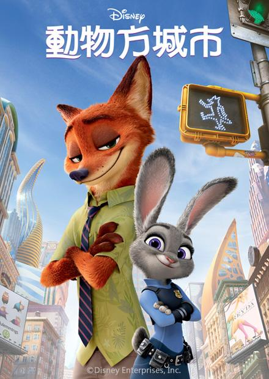

˗ˋˏ𝑴𝒚 𝒊𝒏𝒕𝒆𝒓𝒆𝒔𝒕 ˎˊ˗
小學時我非常喜歡跳舞，從小一到小六都參加熱舞社，但因為國中沒有舞蹈相關的社團，所以就沒有繼續跳舞了，但那之後我發現自己非常喜歡聽音樂和看電影，不管心情好壞，或者有著煩惱時，都能從音樂中得到放鬆，我非常喜歡聽國外小眾音樂，那種節奏輕快，旋律動人的音樂，真的讓人有種置身世外桃源的感覺，不管是在上學的途中或者回家的路上，我都喜歡戴上耳機，沉靜在音樂之中，心情都會變得非常愉快，我也非常的喜歡看電影，每次看一部電影，看完後都會有不同的感想、感受，也能思考其中電影想傳達的理念，我也會上網找其他人觀看後的心得感想，能從中得到不一樣的見解，我覺得這是件非常有趣的事，因此每次有電影上映，只要我感興趣，都會立刻找媽媽或者朋友一起去看。
꙳私藏歌單
꙳值得二刷
|  | 這部動畫片處處是伏筆，如果是迪士尼的粉絲看了想必會感受到其中的用心，裡面藏了許多小彩蛋，而且跟其他迪士尼動畫片相比，我覺得這部更有值得我們去思考的地方，我們老是用刻板印象去看待別人，對他人有先入為主的想法，看完這部片後多多少少能了解它其中想帶給我們的東西，而且它不管男女老少都能看，很適合利用週末去租片子跟家人看。 |
 |
這部電影是在2018年上映的，題材較沈重一點，是在講述霸凌的故事，霸凌這種事本身就是一個不合理的行為，今天不管是非對錯，想欺負你的人能用千千萬萬個理由來數落你，不管是霸凌者或是旁觀者都會給予受害者極大的傷害，影片最後是開放式結局，讓觀眾自行腦補想像，這部片當時我每看必哭，大家看之前記得準備好衛生紙。 |
想必大家心中都有一個最愛的漫威角色吧！而我在這當中最喜歡的就是鋼鐵人，在他推出的三部系列裡，第一集讓我印象最深刻，從一開始史塔克的玩世不恭，到後面他想為了世界做改變，真的非常的不容易，並且是個重情重義的人，鋼鐵人給我一種你需要他時，他永遠會出現在你身邊的感覺，至今還是無法忘記第一次看到鋼鐵人的我當下有多驚喜。 |